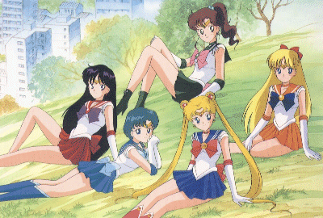

Sailor Moon

Useful Links
Anime Pocket Guide entry
Anime Web Turnpike: Sailor Moon Links
DK's Sailor Moon Games Page
TELE-Pathetic Industries
Gameboy Games
Bishojo Senshi Sailor Moon
Bishojo Senshi Sailor Moon R
Game Gear Games
Bishojo Senshi Sailor Moon S
Genesis Games
Bishojo Senshi Sailor Moon
PC Games
Sailor Moon Solitaire
Sailor Moon World
Warriors of Love
Sailor Moon: Dimensional Justice
Sailor Moon RPG Project
Doom Conversion Patches
Quake Conversion Patches
Sailor Moon RPG
SNES Games
Bishojo Senshi Sailor Moon
Bishojo Senshi Sailor Moon Another Story
Bishojo Senshi Sailor Moon S [kanji]
Bishojo Senshi Sailor Moon S Kondowa Puzzle de Oshioikiyo!
Bishojo Senshi Sailor Moon SuperS [kanji]
Bishojo Senshi Sailor Moon SuperS Fuwa Fuwa Panic
Panic in Nakayoshi World
Anime Video Game Resource Center © 1998 by
Luis A. Cruz